Design system for multi-brand club apps
- Role
- UI/UX & Product Designer
- Platform
- iOS, Android
- Domain
- SportTechDesign systems
- Team
- 2 designers, project manager, developers, QA
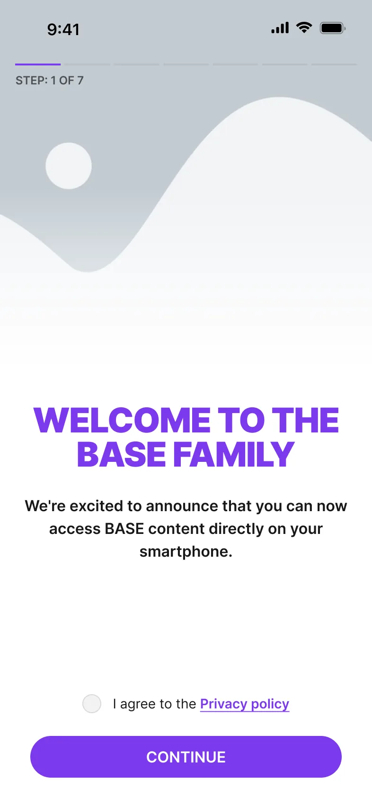
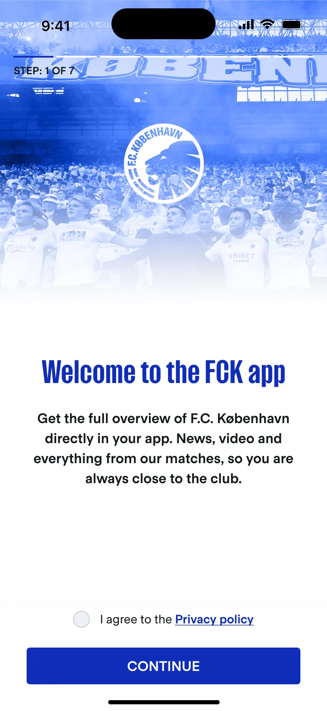
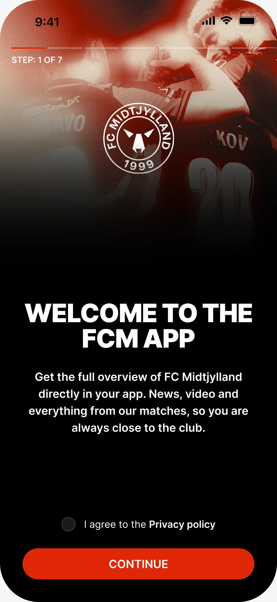
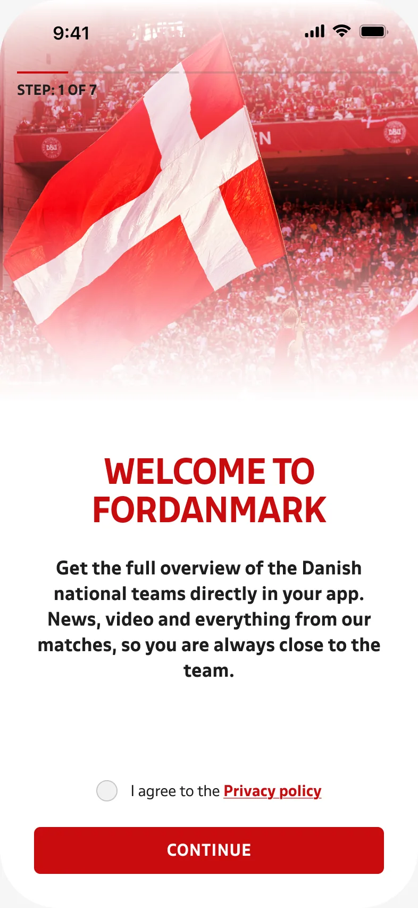
FC Copenhagen
- bgPrimary
- #0F2DB9
- radius/control
- 4 px
- title2
- FCK Sans Bold
- bgPage
- #FCFCFD
- Welcome picture
- Club photo
Pick a club, then drag across the screen to compare it with the base theme.
- Problem
- The white-label product had to add clubs fast, but each club app was still styled by hand on a half-tokenised library.
- What I did
- With a second designer, moved the system to Figma variables: a semantic layer, a theme per club and a plugin that applies it.
- Result
- 10+ club apps on one base theme. A new club gets a theme — colours, fonts, radii, pictures — not new screens.
One base theme, 10+ club themes. The same screen becomes FC Copenhagen, FC Midtjylland or ForDanmark when the plugin applies a club’s variables.
Context
I joined the white-label team when the product had been live for about two years. Components were built on Figma styles and only about half of the values were tokens, so every new club still meant styling screens by hand.
Over the next two years the second designer and I co-owned the system. We moved it to Figma variables, added a semantic layer and a theme for each club. He built the plugin that applies a theme to a batch of screens; we tested and improved it together. On top of the system I designed club apps and features, and we both added components, marked old ones as legacy and answered developers’ questions.
Constraints
- 10+ club brands on one base theme, each with its own colours, fonts, corner radii and pictures
- Some clubs may want a dark theme, so a theme needs room for more than one set of colours
- New clubs join while other club apps are live, so a component can’t simply be deleted
- Developers build from Dev Mode, so names and values in Figma are the handoff
Process
We based the colour layer on the Reshaped color system. Names describe a role — bg-primary, fg-neutral, on-bg-primary — and every club fills in the same table. Alpha, beta and gamma are variants a club can use for a dark theme.
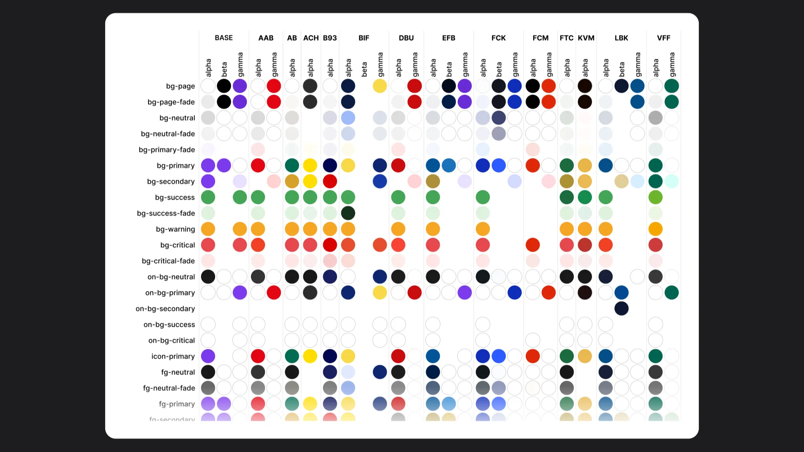
Type follows the same rule. Every club has the same text styles, from display to textLinkSmall, in its own font.
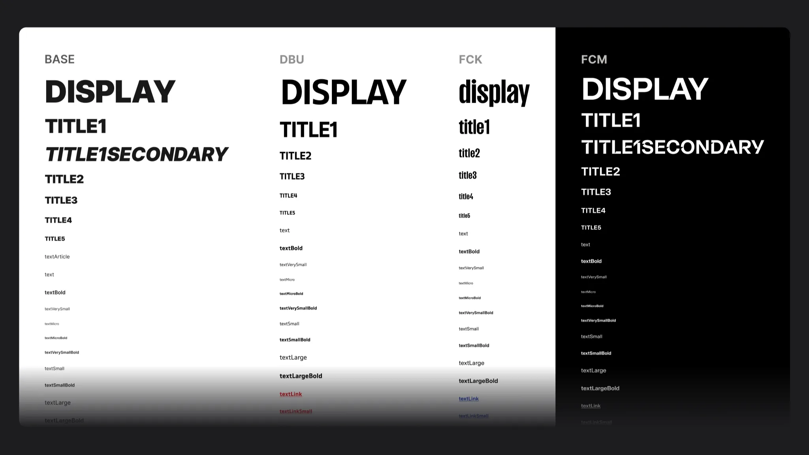
Key decisions
Where does a club’s brand live?
Options: a copy of the library for each club, club colours set by hand on each screen, or one base theme that asks for semantic tokens. We chose tokens: a component never knows a club’s colour, it asks for bgPrimary or radius/control and the club theme answers. Cost: more time up front on tokens and variables. In return, a new club is a new set of variables, not a recolour of every screen.
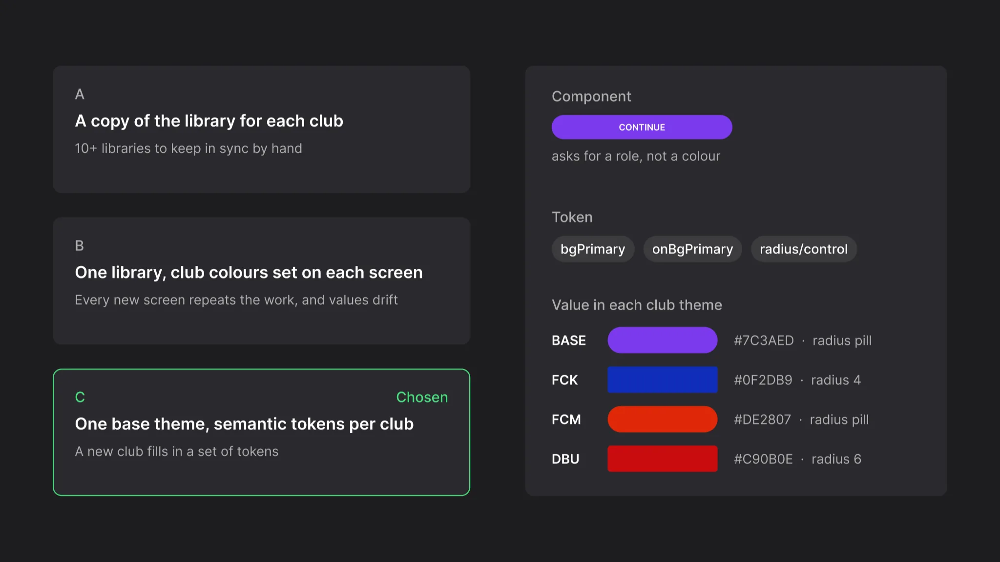
What happens to a component we replace?
Options: delete it, or keep it under a _LEGACY name that points to the new one. We kept it: club apps were live, and a deleted component breaks screens nobody is looking at. The name tells the next designer what to use instead. Cost: we didn’t always find time to swap every instance, so some legacy parts stayed in the file.
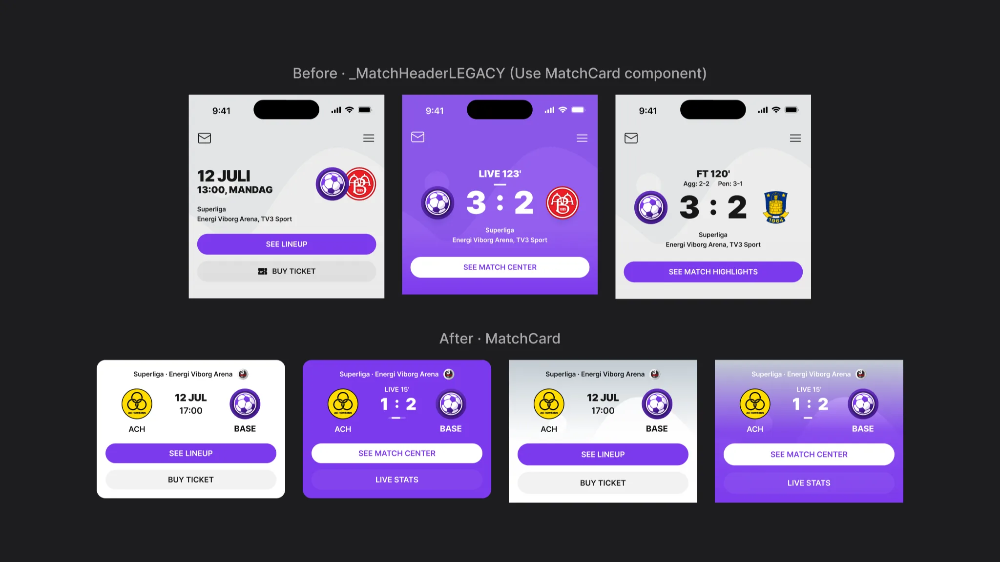
One base theme, a theme per club
Every feature is designed once, in the neutral base theme. A club theme is a group of variables and styles with the same names: colours, corner radii, fonts, shadows and pictures. The plugin swaps the base group for the club’s group across a batch of screens.
Pictures were our own find. Logos, onboarding photos, stories and article images are named per club too, so the plugin changes them along with the colours.
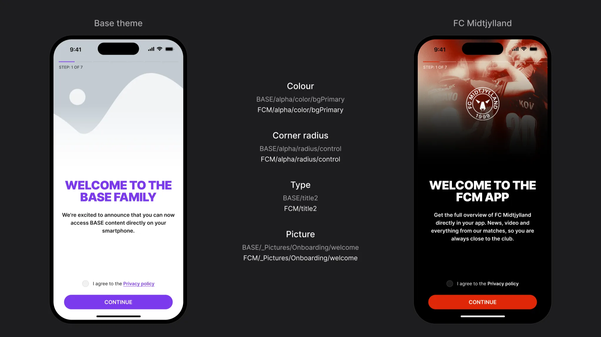
Components that hold up in every club
The file holds around 1,000 components and variants. They use tokens only, so each one looks right in any club theme.
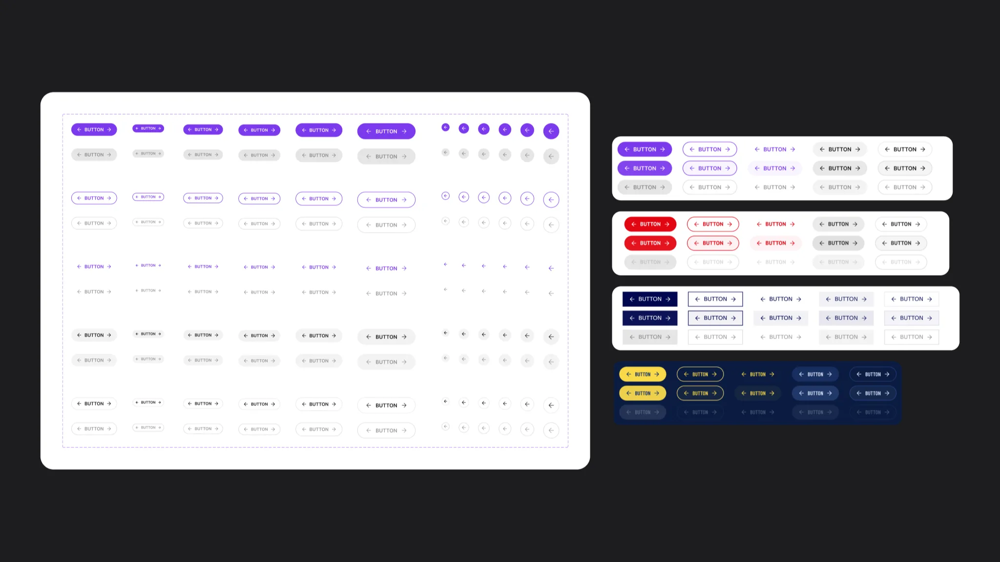
Figma had no real slots, so a section is a reusable block with a slot inside. Content changes without detaching anything.
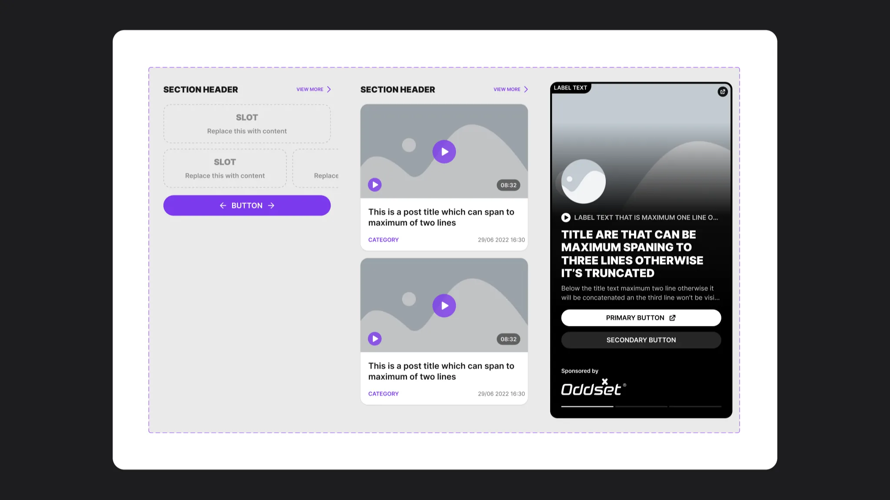
Screens are assembled from these parts, not drawn.
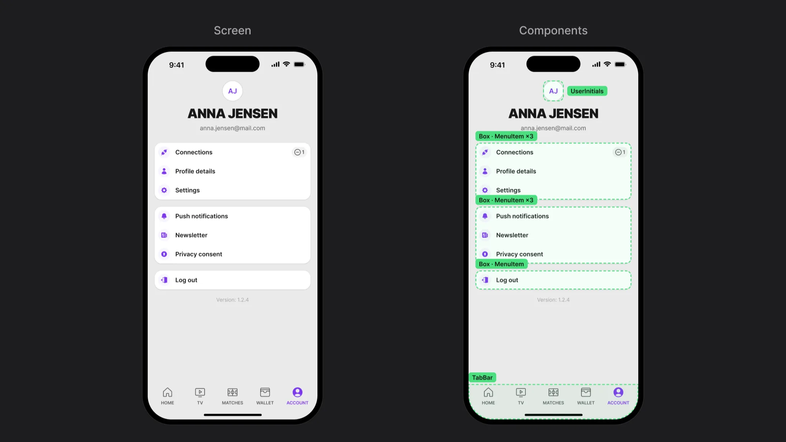
States and edge cases
Inputs carry every state, so a form never needs a one-off: empty, filled, typing, locked and an error that says what is missing.
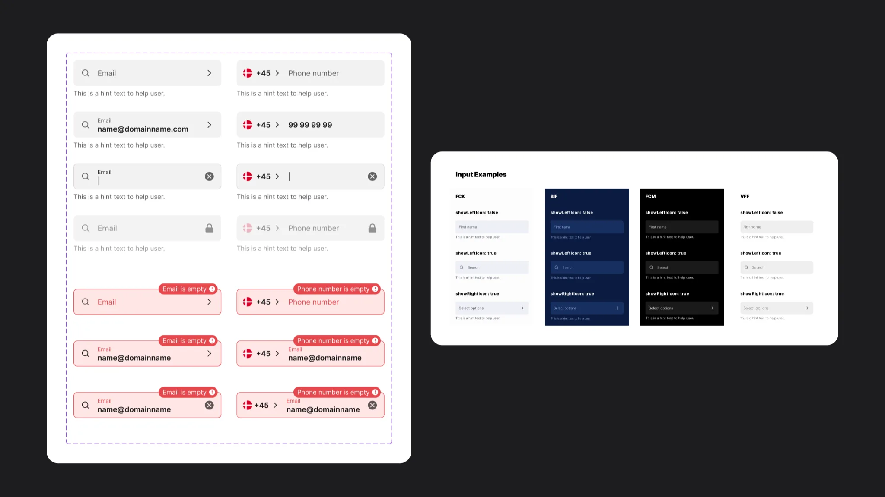
Rules live in the file
Most support work was small rules that are easy to forget. We wrote them next to the assets in Figma, where the next designer would see them.
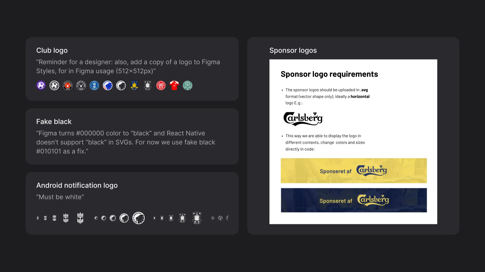
Changes reached developers through a changelog, calls and Slack. They built from Dev Mode and asked us when something was unclear.
Result
Platform results. Product numbers, not personal ones.
10+
club apps on one base theme
~1,000
components and variants in the system
+50%
more active fans
1.2M
app sessions a month
Source: Sports Innovation. My part was the system these apps run on, co-owned with the second designer.
What I learned
- Name tokens by role, not by colour. A new club then fills in a table instead of redrawing screens.
- Pictures are part of the brand too. Once logos, stories and article images were named per club, the plugin could switch a whole screen, not just its colours.
- Developers read the system in Dev Mode, so layer and token names are the handoff. A sloppy name is a bug.